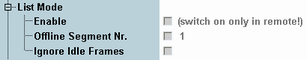

The list mode parameters are basic control elements for the GSM multi-evaluation list mode. R&S CMW-KM012 is required.
Multi-evaluation list mode in GSM In list mode, the measurement interval is subdivided into segments, according to the expected power and frequency steps of the mobile station (MS) under test. The list mode is essentially a remote control feature; for an introduction see "List Mode". |

Shows whether the list mode is enabled and disables an enabled list mode. The list mode must be enabled using the remote control command below.
Remote command:Selects the list mode segment to be displayed in the measurement diagram. For details, see "Offline Mode and Offline Segment".
To select a segment number, the list mode must be enabled.
Remote command:Selects whether idle frames are ignored or cause a "Signal low" error. For details, see "Idle frame evaluation".
To set the parameter at the GUI, the list mode must be enabled.
Remote command: